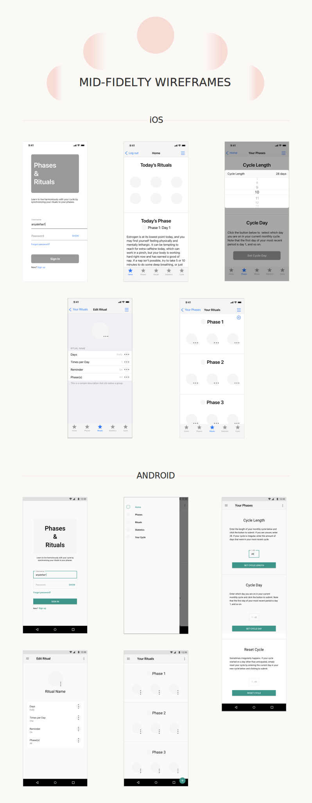

Phases & Rituals
Objective
The objective of this CareerFoundry student project brief was simple and allowed much freedom: Design the iOS and Andoird version of a mobile app of your choice that solves a specific user problem.
Problem
As a woman who spends a lot of time around other women, I know that the struggle to manage life amidst ever-changing moods and energy levels is real. The solution: Phases & Rituals.
My Approach
App Proposal: Not Just a Period Tracker
- Phases & Rituals not only tracks when a woman can expect to bleed, but also tracks the hormonal phases she goes through during each cycle, split into 4 distinct weeks.
- First, the user inputs her cycle information and the app generates when and what to expect during each phase. By educating women on what to expect and when to expect it, it becomes easier for them to plan their life and manage the feminine fluctuations throughout.
- Next, the user inputs her routine rituals. These can be anything she wishes to be consistently productive with, from walking the dog to calling Grandma.
- The user uses Phases & Rituals to track productivity with each ritual throughout her cycle, and the app produces statistics reflecting whether or not productivity is high.
- Based on knowing what to expect with each phase from the information provided, and what the statistics relay, she will then rearrange her schedule accordingly to be her most productive self. For example, calling Grandma might be most enjoyable during the Rise Phase, when women tend to be more sociable, versus the release phase, when women tend to crave solitude and silence.

Competitive Analysis
I could not find an app with the exact same purpose as Phases & Rituals, though between Streaks and Hormone Horoscope, I found much inspiration and some room for growth.
Streaks
An app designed to aid users in forming new habits or breaking bad habits.
- I liked that Streaks limited the amount of daily tasks a user can input as this makes success of task completion more likely.
- I agreed with the use of visual graphs for productivity statistics, allowing a user to see what is or is not working in their routine, although decided to go with basic statistics of a little less detail within Phases & Rituals.
- I thought the use of simple, clean icons to display each task was well-organized and attractive, and a wise use of screen real estate.
- I thought the use of badges and sound effects for motivation was unnecessary for the purpose of my app.
Hormone Horoscope
An app that tracks a woman’s hormonal cycle, predicting how she will feel each day throughout.
- I liked the use of a graph visually displaying the hormonal fluctuations each cycle.
- I disliked the visual design.
- I appreciated the organization of the predicted daily symptoms.
- I found the search feature necessary and space-consuming.
- I found the notes feature too bulky, but did want to include a way to track symptoms, so instead chose to use compact icons to do so.
User Flow Diagram
I then put together the user flow diagram.

Low-Fidelity Wireframes
I used Balsamiq to create the low-fidelity wireframes. To differentiate between the iOS and Android versions of the app, I used platform-specific design patterns that were familiar to the respective mobile users. A few examples are shown above.
Mid-Fidelity Wireframes
When I was ready to progress with my design, I moved into Adobe XD to produce the mid-fidelity wireframes.
Gestures
My next step was to add navigational gestures to the screens.
User Testing
Using InVision, I created a prototype to test the user flow (is it intuitive to new users?) and requested general feedback on the design choices used.
Feedback
- “I honestly really love it! The color schemes flow together in a calming, feminine way that I resonate with, and the format is very user friendly and informative!”
- “I love the light, earthy, grounding colors of the app. It seemed very self-explanatory and user-friendly with a good flow.”
- “I don’t really have any suggestions! Everything looks pretty concise to me. I thought the colors and buttons looked really good, and the whole thing looked really fresh!”
- “Wow, it looks great and seems to flow well.”
View the iOS InVision prototype here.
View the Android InVision prototype here.

High-Fidelity Wireframes
Then, taking guidance from the user feedback, I revised and finalized the app design. Here are the final screens in entirety.

Retrospective
Looking back, I gleaned a few valuable lessons to take with me as I move forward…
What Worked
- Maybe my favorite thing about this project was that I found a real unmet need and came up with a solution to it. Because the purpose of the app was wandering into uncharted territory, though, it required some educational content. I feel that I succeeded in that area with some great onboarding screens that really do allow the new user to use this app with confidence right away.
- I enjoyed creating the ritual icons, and think they turned out pretty well: the style is clean and minimal, and still relays each icon’s meaning clearly at a glance, and my time-management for this was on point.
- As I was in the mid-fidelity portion of Phases & Rituals creation process, before applying any of the brand’s own design style, I felt super satisfied with how each version of the app so clearly represented its respective platform. Through use of the UI kits and a deep understanding of the platform guidelines, I was able to do so with ease and confidence.
What Didn't Work
- When performing user testing, I had both males and females participate. Though the male participants did give useful feedback on design and user flow, their lack of understanding on the topic of the app limited their ability to provide pertinent feedback. In this situation, I had plenty of testers, and it didn’t present a huge problem, but it did demonstrate the importance of selecting test participants that fit the intended audience in future projects.
- Initially, I had selected colors of a more monochromatic nature for the app (peach and burgundy) because I personally really like the look of such color combinations. The contrast was too lacking, however, and I did end up changing my accent color to one that provided more contrast, which wasn’t the best use of my time. In future projects, I will do better to focus more on what works as effective UI design, and less on my personal preferences.